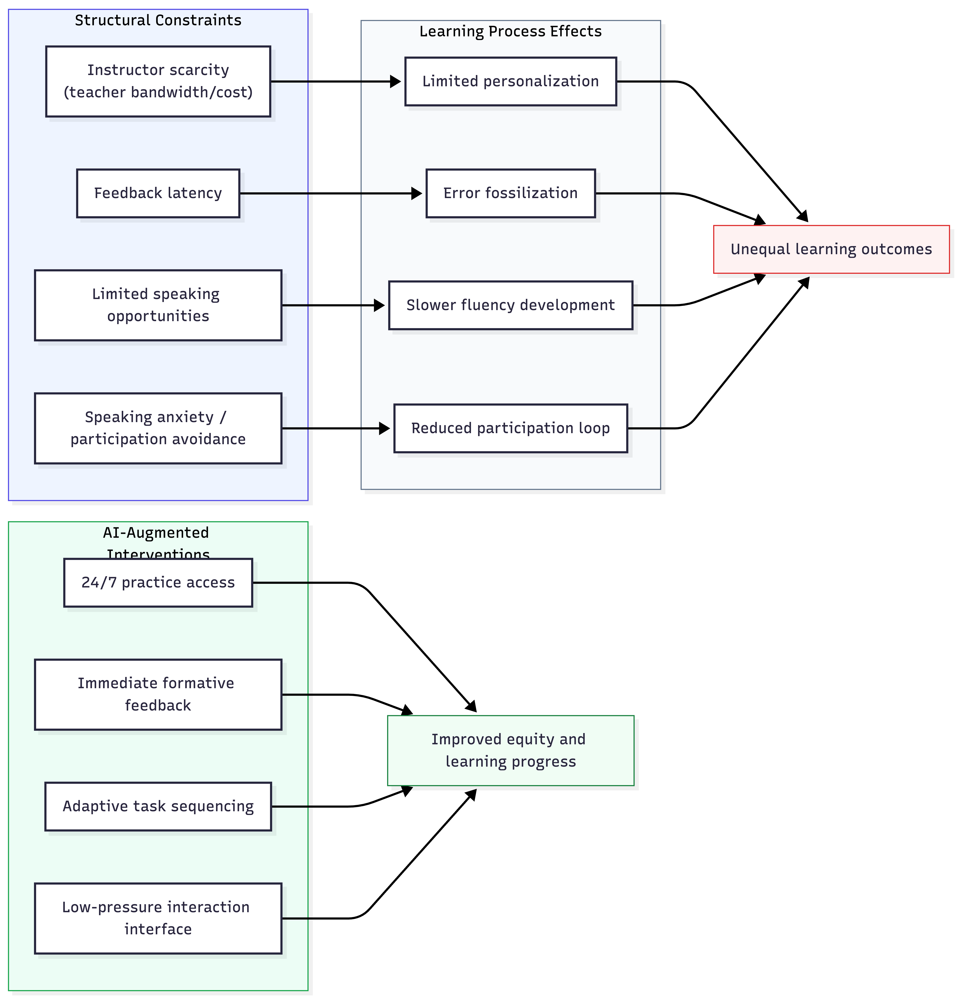
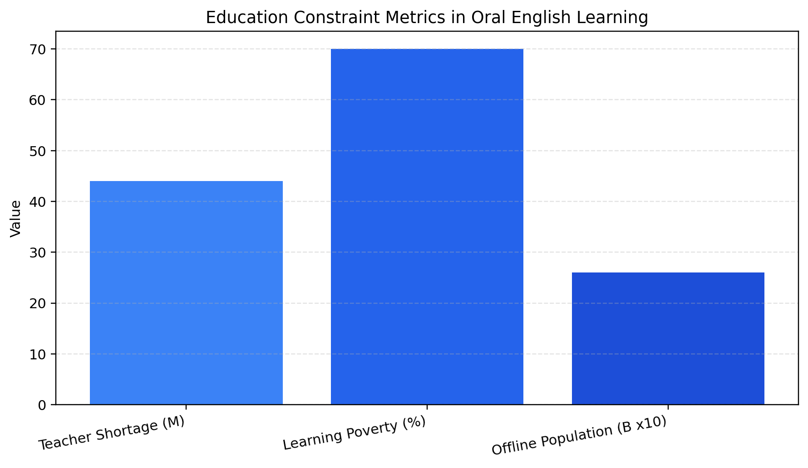
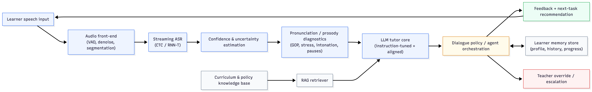
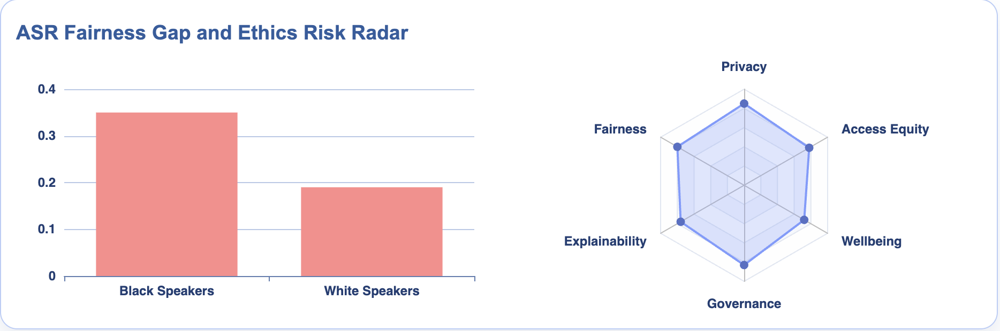

Abstract
Generative AI and conversational agents are now widely promoted as a solution to long-standing bottlenecks in language education, especially in spoken English learning where high-frequency practice and individualized feedback have long been limited by cost, teacher availability, and institutional capacity. Much public discourse is portraying AI as a substitute for teachers and claiming that introducing AI to education will solve all the problems such as educational inequality. However, this blog goes beyond simply implementing AI in education, and argues that conversational AI can meaningfully improve language learning only under specific conditions: pedagogically aligned task design, robust fairness testing across learner populations, transparent feedback, data protection, and sustained teacher oversight. These conditions are essential points for AI to gain trust and perform ethically in the education industry.
The analysis is organized in three parts. First, the blog discusses the application domain (oral English education), investigating the current challenges and the case for AI/ML adoption. Second, it introduces the main AI/ML technologies that can address these challenges, and explains their mechanisms, tradeoffs, and possible mitigation strategies. Third, it turns to the wider ethical aspects of AI/ML in language education, arguing that fairness, privacy, explainability, and accountability should be taken into consideration as a whole. As a consequence, this article proposes a conditional deployment framework: AI should be treated as infrastructure for high-frequency practice and formative feedback, embedded within transparent pedagogy, fair ML evaluation, and strictly regulated governance.
Introduction: What Counts as "Meaningful Improvement" in Oral English Education?
Oral English learning is one of the most challenging domains in language education. It depends heavily on speaker-listener interaction, immediate feedback and confidence-building over time. Unlike reading or listening tasks, where learners can practice independently and receive delayed and objective feedback, oral learning requires learners to practice with a teacher or a partner, and improve by the feedbacks. Therefore, oral English learning is a high-interaction task that requires a lot of educational resources and time, which potentially leads to inequality since resources are limited for most learners.
Many educational institutions are now considering introducing AI to language education, considering that compared to human teachers, AI can provide more consistent and immediate feedback, and can scale to a larger number of learners at lower costs. Currently, AI capabilities have advanced rapidly. Since 2023, mainstream AI technologies have moved from text-only tutoring prototypes to multimodal, speech-based systems. In 2024, OpenAI released GPT-4o with near-real-time multimodal interaction capabilities and reported substantially lower audio-interaction latency than earlier pipeline architectures (OpenAI (2024)). Across the industry, this development has fueled expectations that AI could function as a "24/7 speaking tutor." At the governance level, the EU AI Act entered into force in August 2024, with staged obligations in 2025 and 2026, and the General-Purpose AI Code of Practice was published in July 2025 as a voluntary compliance instrument for GPAI providers (European Commission (2025, updated 2026)), which indicates the regulation of AI is becoming more mature.
The dilemma is that simply introducing AI to education is not equivalent to educational improvement. This distinction motivates the thesis of this blog.
Conversational AI can improve oral English learning mainly by increasing speaking opportunities, reducing feedback latency, and supporting individualized patterns; however, such gains become educationally meaningful only when systems satisfy ethically acceptable conditions: pedagogical alignment, subgroup-robust ML performance, transparent feedback, privacy and data protection, accountability, and teacher-in-the-loop oversight.
Application Domain, Current Challenges, and the Case for AI/ML Adoption
This section defines the oral English learning domain, outlines current challenges, and explains why AI/ML adoption can be a rational solution to these challenges.
Domain Definition: a High-Interaction Educational Task
The majority of English learners are non-native speakers. In the education industry, there are two main types of English learners:
- Test-preparation: preparation for IELTS/TOEFL speaking tasks where learners require structured fluency, grammar precision, and coherent argumentation under time constraints.
- Communication-driven: workplace, study abroad, and intercultural communication where communicative appropriateness, interaction management, and confidence matter more.
In traditional oral English learning, learners often rely on one-to-one or one-to-many speaking feedback, which is expensive and time-consuming. Learners rush to their personal tutors at fixed time slots, mostly 2 hours per week, to practice their speaking skills on merely two or three topics. Such limited practice time and topic variety are not enough to improve their speaking skills, but expanding practice time normally leads to unaffordable costs.
Moreover, oral English competence is far beyond giving a right answer. It requires learners to have a good command of grammar, vocabulary, pronunciation, and fluency. The learners have to keep practicing these skills over time, and fresh starters often improve slowly by imitating the teacher, which leads to high demand for teacher resources and time.
Regarding these domain features, ML-centered analysis is suitable because this domain is data-rich and sequential. Speech signals can be represented as audio streams, and linguistic outputs can be represented as transcripts. Models can also analyze temporal trajectories such as turn-taking, pause patterns, and communicative behaviours. The overall learning progress can be tracked through longitudinal traces including error recurrences, strategic shifts, and confidence improvements.
Therefore, oral English learning is a naturally multimodal sequence-learning environment, making it an ideal domain for speech ML, NLP, RL, and teacher-in-the-loop system design.
Challenges in Oral Learning
A high-quality oral English learning curriculum requires more than content delivery. It requires sustained cycles of speaking practice, feedback, and correction: (1) Production (learner speaks); (2) Diagnosis (what errors occurred and why); (3) Feedback (how to improve); (4) Correction (apply the feedback in a new context); (5) Confidence Stabilization (maintain confidence and willingness to speak).
Therefore, oral English learning cannot be reduced to merely memorizing vocabulary and grammar; it depends on repeated practice, being corrected and reinforced over time, and becoming familiar with various speaking contexts.
However, the traditional oral English learning system is not able to scale this loop efficiently. Taking exam preparation as an example, a novice learner may require intensive coaching to produce even short, coherent spoken responses on unfamiliar topics, and building durable spoken fluency typically takes months of sustained practice. Moreover, proficiency decays quickly without continued practice, making the long-term practice routine necessary.
Resource Constraint: Instructor Bandwidth and Cost
As is explained in section \ref{sec:domain_definition}, oral English learning generally requires one-to-one or one-to-many speaking practice and immediate feedback, which is the main reason why oral English learning is hard to scale and expensive. Group classes reduce cost but also reduce individual speaking time and personalized correction, while one-to-one feedback is too expensive for many to afford. In exam-focused education markets, for example IELTS and TOEFL, premium coaching only exists in elite institutions and in socioeconomically advantaged regions, which leaves learners in low-income regions with limited access to qualified instructors. UNESCO estimates that about 44 million additional teachers are needed globally by 2030, which suggests that instructor scarcity is a structural capacity constraint rather than a short-term issue (UNESCO (2023)).
This is not a temporary issue; it is a structural constraint tied to human labor economics. Unlike subjects that can be studied primarily through textbooks and problem sets, such as mathematics, oral practice requires an interactive speaking environment with a teacher or a partner. In communities where English speakers are scarce, learners may face high costs for private tutoring or forfeit practice opportunities altogether.
Temporal Constraint: Feedback Latency
Feedback latency is another important constraint that makes oral learning hard to scale. If correction arrives too late or too vaguely, learners may consolidate incorrect pronunciation or discourse patterns. Human-only systems often cannot sustain high-frequency immediate feedback outside scheduled class sessions. As a consequence, learners may fail to revise and repair errors immediately. Moreover, considering the limited practice time and topic variety, the feedback given by human instructors is often vague and may only cover a few errors.
Measurement Constraint: Difficulty of Tracking Overall Oral Progress
Oral competence is multidimensional: pronunciation, fluency, grammatical control, interactional willingness, and practical appropriateness. To track the overall learning progress, institutions often rely on periodic tests, which is not a good way to measure the overall learning progress because it only focuses on certain dimensions and is not comprehensive. In one-to-many classes, a single instructor may struggle to monitor all these dimensions for every learner, which can weaken feedback quality and lead to the under-detection of persistent errors.
Personalization Constraint: Learner Diversity
Traditional oral English learning faces the challenge of learner diversity. Compared to other subjects, which mostly consider learners' intelligibility or thinking ability only, oral English learning is more sensitive to learner background. In this domain, teachers have to take into consideration that learners differ in first-language transfer effects, accent background, anxiety level, motivation pattern, and target scenario such as exam interview or business negotiation.
Static curricular pacing cannot fully satisfy everyone's needs, and it would be difficult to tailor instruction and speaking materials to individual learners. Moreover, instructors may default to familiar teaching routines, which can lead to the problem of ignoring some learners' needs and preferences.
Psychological Constraint: Speaking Anxiety and Participation Avoidance
To speak to a teacher or a partner, learners have to overcome their speaking anxiety and unwillingness to participate. Many learners avoid speaking because they fear negative judgment, or they just refuse to speak in front of others. This creates a cycle that can lead to the learners' speaking ability being stuck at a low level:
- less speaking → slower improvement → lower confidence → less speaking.
Simply encouraging learners to speak is not enough. Learners need to be provided with a safe and supportive environment to speak, and the environment should be designed to be friendly and engaging. However, such methods are hard to implement in practice, which generally increases the costs and lays extra workload on teachers.

Why AI/ML Is Rational in This Domain
The constraints mentioned in section \ref{sec:challenges_in_oral_learning} are mainly caused by the labor resource limitation which is hard to solve in traditional human-only systems. At the same time, around 70% of 10-year-olds in low- and middle-income countries are estimated to face learning poverty, which highlights the scale pressure for scalable support tools in foundational learning systems (World Bank (2024)). The education industry can take advantage of AI/ML that is scalable and cost-effective to address these constraints. However, AI/ML is rational in oral English education only when implemented as augmentation rather than replacement.

Scale and Availability Argument
ML systems can provide continuous practice sessions at low marginal cost, which directly addresses these constraints. A learner can practice speaking with the system at any time and any place, not being limited by the instructor's availability and the learner's schedule. In traditional classroom settings, individual learners' access to the teacher is constrained by scarce instructor time; But with AI-enhanced practice, available learning time is effectively bounded by learner motivation and device access rather than by a fixed schedule.
The online ML systems also address the problem caused by unevenly distributed instructor resources. Learners in regions with limited teacher resources can access the system as well, narrowing the educational gap between advantaged and disadvantaged regions.
Feedback-Latency Argument
ASR + LLM pipelines can generate immediate formative feedback after each speaking attempt and receiving feedback no longer requires waiting for several days or weeks. When feedback is timely, learners can correct errors once they have made the mistakes, which potentially increases learning efficiency and reduces the risk of errors being consolidated.
Data-Visibility Argument
AI systems can memorize long-term learning traces that humans cannot manually aggregate at scale, including:
- error persistence;
- topic-level confidence;
- turn-taking stability;
- pronunciation trend;
- vocabulary expansion trajectory.
Also, as it is difficult for a single human instructor to clearly track every learner's progress in the classroom, the context and memory components of AI systems can set up personalized data collection and aggregation for each learner. For different learners, AI will collect their past learning traces and analyze their learning patterns and progress, which can support better pedagogical decision-making when interpreted responsibly.
Adaptive Pathway Argument
Learners can set their own learning goals and choose their own learning paths, which can reduce the frustration and improve the sustained engagement. ML systems can also generate personalized speaking materials and tasks for every individual learner, which can improve the learning efficiency and reduce the human workload.
Psychological Argument
Many students initially feel anxious speaking with instructors, yet may feel more comfortable practicing with software interfaces that reduce perceived social evaluation. After becoming accustomed to speaking confidently, they may switch to talking to teachers and gain better learning experiences. Implementing AI/ML in oral English learning can reduce learners' pressure and improve their confidence, laying a solid foundation for them to speak with others confidently later on.
How Different AI/ML Technologies Address Domain Challenges
This section explains how different machine-learning components work together to address the practical challenges outlined above. To fully support oral English learning, the ML technologies should be implemented as a pipeline that includes:
- Automatic Speech Recognition (ASR): raw speech is cleaned and segmented, converted into text with uncertainty estimates;
- Pronunciation and Prosody Scoring Models: diagnosed for linguistic issues;
- Large Language Models (LLMs): turned into feedback and dialogue moves;
- Dialogue Management and Agentic Orchestration: adapted over time through learner modeling and policy decisions about when to intervene and when to turn to a teacher.
ASR converts speech to text and ideally returns confidence scores alongside tokens, which is then diagnosed for linguistic issues by pronunciation and prosody scoring models. The LLMs then produce contextual replies and feedback for learners, and the dialogue management and agentic orchestration module controls the feedback timing, traces aggregation and learner modeling. These together build a coherent pipeline for oral English learning.

Recent Developments in AI/ML in Language Education
Recent real-time multimodal systems have made low-latency speech interaction feel dramatically more natural, providing richer vocal cues compared with older cascaded pipelines. Oral-language AI especially important now. OpenAI's 2024 GPT-4o release emphasized near-human latency and integrated audio-text-vision processing (OpenAI (2024)), which makes systems now support low-latency speech interaction at scale. The EU AI Act timeline has moved from proposal to published obligations, and UNESCO's guidance on generative AI in education (UNESCO (2023, updated 2026)) continues to emphasize human-centered design, age-appropriate safeguards, and data protection in school settings.
The reduction of latency is important for language education because timing and conversational responsiveness significantly impact the perceived interaction quality and speaking confidence. Officials are also paying more attention to the privacy and security of the audio streams. However, real-time interaction leaves less room for observation, increases the risk of immediate but incorrect corrections, and raises privacy sensitivity when audio is streamed continuously. Therefore, the governance of the real-time interactions is becoming more and more important. This expands both opportunities and risks for the AI/ML technologies in oral English learning.
Evaluation Framework for ML in Oral Education
How to evaluate the ML technologies in an oral English learning scenario is a critical question. In traditional evaluation, the system is evaluated by the aggregate accuracy, which in this case only indicates the system's ability to transcribe the speech correctly rather than the ability to provide meaningful feedback and help learners improve their speaking skills.
Specific and tailored evaluation measures should be introduced to give a more comprehensive view of the system's performance. ASR quality should be reported with word/character error rates, calibration quality, and robustness under various acoustic conditions. Diagnostic modules should be evaluated against expert agreement on error categories. LLMs should be tested for faithfulness to the teaching goals and pedagogical consistency as well as harmful outputs. The agent should be evaluated for whether it can recognize the learner's learning progress and performance, provide meaningful historical context for both the LLMs and the learners, and adjust the difficulty of the tasks accordingly. System-level outcomes should include transfer to human conversation, learner confidence trajectories, and teacher workload impacts. Without this layered view, deployment decisions become persuasive but weakly evidenced.
Automatic Speech Recognition (ASR): Foundation Model for Spoken Inputs
Mechanisms
Modern ASR is built on self-supervised speech representation learning such as wav2vec-style pretraining, which is followed by sequence modeling with CTC, RNN-T, or related transducer architectures. And often model-assisted decoding is used later to improve contextual transcription. In practice, the system outputs token hypotheses as well as confidence estimates, and those estimates matter for education since uncertain recognition should not be treated as learner errors. Technically, this is often implemented as a streaming transducer stack where chunk-level incremental decoding is paired with token-level confidence and uncertainty estimation. Low-confidence spans can then be routed into a "needs confirmation'' path rather than directly entering the correction loop, which reduces the risk of turning recognition noise into pedagogical misdiagnosis.
Because ASR makes immediate transcription possible, it directly supports the feedback-latency challenge described in section \ref{sec:challenges_in_oral_learning}. Furthermore, it can track recurring patterns such as mispronunciations, hesitations and pauses over time, which can provide valuable insights for personalized learning and feedback, reducing repetitive instructor workload while still leaving room for human judgment.
Tradeoffs
The tradeoffs are mostly related to ML-specific issues. Word error rates can vary substantially by accent, dialect, and recording conditions, and the accent robustness gap cannot be solved by simply averaging performance across users (Koenecke et al). Outside the classroom, learners may record in noisy environments or with low-quality microphones, which is significantly different from training data and raises reliability concerns. Finally, confidence scores can be miscalibrated, if the system is overconfident when wrong, downstream feedback can mislead learners and reinforce incorrect forms.
Despite these ML-oriented issues, implementing ASR into oral English learning also brings domain-specific challenges. Acoustic similarity is not the same as communicative intelligibility since "standard accent" norms can encode cultural-linguistic bias. And human ratings in training data can be noisy or inconsistent, which can lead to biased evaluation and decision-making.
How to Mitigate the Limits
To push the boundaries and overcome the limits, mitigation typically combines data-side augmentation such as more diverse training data or accent-diverse corpora, calibration such as subgroup-aware thresholds, interface-side uncertainty such as labeling low-confidence spans, and human review where decisions are consequential.
Pronunciation and Prosody Scoring Models
Mechanisms
Beyond transcription, many systems add pronunciation and prosody scoring models that use phone-level posteriors, prosodic features such as stress and intonation, and temporal features such as speech rate and pause patterns. These models can be supervised on annotated learner speech or teacher-rated corpora, and they help connect acoustic detail to instructional goals. At a finer level, diagnostic pipelines commonly combine phone-level GOP-style evidence with prosodic contour and pause-timing statistics, and then train multi-rater ordinal scoring models to handle annotation inconsistency. Instead of returning only a scalar score, stronger systems produce a structured tuple of error type, evidence span, and targeted drill recommendation, which makes downstream feedback more actionable.
In domain terms, this layer supports personalization by highlighting pronunciation difficulties, supports progress tracking by showing trends over weeks rather than single sessions, and can align practice feedback with exam-style rubrics when those rubrics are explicitly modeled.
Tradeoffs
The tradeoffs are familiar in ML: acoustic similarity is not the same as communicative intelligibility; "standard accent" norms can encode cultural-linguistic bias; and human ratings in training data can be noisy or inconsistent.
How to Mitigate the Tradeoffs
Stronger systems often separate intelligibility risk from accent conformity, train with multi-rater supervision to model rater variance, and validate against listener-based intelligibility where possible.
Large Language Models (LLMs): Conversational and Feedback Core
Mechanisms
To successfully analyze the input and generate appropriate feedback, the system typically relies on a pretrained transformer with instruction tuning for teaching behavior, preference optimization such as RLHF/DPO-style to shape response quality (Ouyang et al), safety constraints, and retrieval augmentation for grounded explanations (Lewis et al). Fine-tuned LLMs can also be used to generate speaking tasks and scenarios, which can help learners practice in a more realistic environment. In oral tutoring, LLMs not only answer questions, but also generate justifications and explanations for the corrections, helping learners understand the corrections and improve their learning. Moreover, LLMs can be enhanced with external knowledge bases to provide more accurate and relevant information, and with reinforcement learning to improve the response quality and safety. Past context across turns can be integrated to provide a more comprehensive understanding of the learner's learning progress. In practical tutoring stacks, generation is usually aligned with supervised instruction tuning and preference optimization, then grounded with retrieval from course rubrics or policy-constrained knowledge sources. To stabilize the pipeline, many systems constrain model outputs into structured fields (diagnosis, evidence, correction, next task), so that agent policies can consume and audit the feedback consistently.
Due to the ability to generate diverse speaking tasks, give personalized feedback, and support low-pressure practice that reduces anxiety, LLMs can help learners practice effectively with more confidence. LLMs can also simulate realistic speaking scenarios such as interviews or business meetings at scale, which can help learners practice in a more realistic environment.
Tradeoffs
The tradeoffs should also be taken into consideration, among which hallucinations are the most serious. Hallucinations can produce plausible but incorrect linguistic claims (Ji et al), and model outputs may be overconfident even when incorrect. This may lead learners to consolidate wrong knowledge without being aware of it.
Furthermore, optimization targets tuned for engagement may trade away corrective precision, and it may be difficult to balance the learning-oriented signals with the learners' wellbeing. The limited context tokens also make it difficult to integrate long-term learner histories into the conversation. This may lead to inconsistent feedback and learning progress tracking.
How to Mitigate the Tradeoffs
To eliminate the hallucinations, the system can be trained with more diverse training data, and the hallucinations can be mitigated by using more robust models and more diverse retrieval sources. Optimization targets should be set to balance the learning-oriented signals with wellbeing, rather than solely focusing on engagement. As for context token limitation, the system can be enhanced with more advanced context management techniques, such as long context windows, context compression, and context retrieval.
Dialogue Management and Agentic Orchestration
Mechanisms
Merely relying on LLMs is not enough to address the challenges in oral English learning. A conversational agent layer is needed to track the dialogue state, store the learner profile and prior errors, choose the next instructional move, and define the escalation rules. This agent harnessing layer is what truly turns the short chats into a sustained learning path. It remembers goals across sessions, adjusts difficulty as performance changes, and can package learner progress into summaries that help teachers intervene where it matters. At the system level, orchestration is typically implemented as an explicit policy layer over tools and memory: it maintains learner state, selects the next pedagogical action with rule-plus-learning strategies, and records versioned decision traces. Keeping teacher-override interfaces in this layer is crucial for interventions in high-stakes cases and for accountable deployment.
Tradeoffs
There are still some tradeoffs to be considered. An early mislabel of proficiency or learning style can steer a learner toward the wrong drills for weeks. Moreover, if the system focuses too much on engagement metrics such as time on task, session length, it may simply improve certain metrics without improving speaking quality. The historical data may be poorly captured since there may be many useless sentences or conversations in the past practice, which can introduce noise and bias into the learner model.
How to Mitigate the Tradeoffs
To mitigate the tradeoffs, the system should keep human overrides for both learners and teachers, carefully consider the learner's learning progress and performance, and adjust the difficulty of the tasks accordingly. The system should also assign appropriate weights to the learning-quality signals and engagement signals, rather than solely focusing on engagement metrics. Moreover, importance thresholds can be implemented when the agent tries to memorize the conversation history, leaving the unimportant information to be forgotten, which helps the agent to optimize memory usage and keep the context clean and meaningful.
Wider Ethical Implications of AI/ML in Language Education
What matters more is the ethical implications of the AI/ML technologies in oral English learning, rather than simply implementing the technologies into this domain. Ethics should be built into what models optimize for, what data they learn from, and how outputs are used properly, rather than being considered as independent issues. The aim here is not to simply compile a checklist of concerns, but to connect each concern to concrete ML mechanisms and deployment choices.
Bias and Fairness: From Model Error to Educational Opportunity
In oral English education, a single error may direct the learner to the wrong learning path, and such effects can accumulate over weeks. For example, if some words are misrecognized more often than others due to the accent or dialect, the learners may receive lower automated scores, sharper corrections, or misleading next-step recommendations, which not only downgrades the learners' confidence, but also gives wrong guidance to the learners. According to Koenecke et al, the disparity patterns in commercial ASR can be documented, which indicates that the recognition error of ASR introduces risks into the learning process. In that study, average word error rates were approximately 0.35 for Black speakers versus 0.19 for White speakers, showing a substantial subgroup gap that can propagate into educational feedback quality (Koenecke et al).

Furthermore, bias can enter at many points in the ML pipeline. Training data may represent learner speech diversity poorly, and labels may be noisy because teachers and raters disagree. Optimization may chase a strong average while hiding subgroup harm, which penalizes those who speak with certain accents or dialects.
Therefore, fairness is not a static concept, but a moving target once users and models evolve. Biases caused by different subgroups including accent, dialect, proficiency bands, and device contexts should be considered. The implementation and publication of the system should be transparent and reviewable by humans, honestly report the limitations and risks of the system, and monitor the drift after deployment.
Unverified Content and Monitoring Issues
Although recent multimodal releases enable low-latency speech interaction, this introduces new risks of revealing unverified content to the learners. It becomes more difficult to insert moderation, factual checks and review into the system. Furthermore, the model may expose harmful information such as hate speech, violence, or other sensitive topics, which can harm the learners' mental health and safety.
A useful design is that LLMs should only generate content based on retrieved knowledge and policies from the verified knowledge bases. Such design will slow down the response time, but it can help the system to avoid revealing unverified content to the learners and stay within the safety boundaries.
There is a second monitoring issue: the model drift. The model may drift over time due to the changes of the training data, the changes of the environment, or the changes of the policies. Silent model changes can alter correction tone, difficulty, and recommendations without teachers noticing, which harms trust and may lead to misinterpretation of the system's behavior. In this case, the system should be versioned and monitored to detect the drift, and the system should be evaluated and monitored to ensure the performance is stable and effective. To achieve this goal, every version of the system should be reviewed and approved by the teachers and the learners.
Privacy and Data Protection
Oral AI systems are data-intensive and collect enormously rich traces including audio, transcripts, timing and personal information. Most of these features contain more or less learners' private data. For example, the hottest topics in IELTS speaking are those about personal experiences, family and friends, and future plans. These topics are sensitive and should be protected. The system may also absorb information from the learners' device, such as the device ID, IP address, and browser history.
There have been some regulations and policies to protect the privacy of the learners' data, such as GDPR-style principles (EU (2016)), Contextual integrity theory (Nissenbaum (2010)), and the principles of data protection (UNESCO (2023, updated 2026)). These principles emphasize the importance of the privacy of the learners' data, require the system to be transparent and accountable for the data processing, and minimize the data collection and retention.
The rapid development of real-time voice interaction in 2024--2026 makes the risk profile more complex. The line between learning analytics and profiling is becoming more and more blurred, and concerns have been raised about not only the single logged query, but also the long audio stream that can support fine-grained behavioral inference.
To solve this problem, the system should take responsible measures for data protection, such as designing for minimal retention of raw audio unless there is a clear pedagogical reason, disclosing subprocessors, tightening protections for minors, and making deletion and export realistic rather than nominal.
Explainability and Interpretability
Explainability is the foundation of learning: to successfully learn something basically means we have to know how to explain it. Learners need to see what went wrong and what to try next; teachers need to see why a recommendation was made, not just that it appeared. In practice, it means connecting feedback to identifiable patterns, connecting next tasks to a visible learning goal, and connecting corrections to a rule or source learners can revisit. Only by doing so can the ML outputs demonstrate trustworthiness and avoid misleading or wrong evaluation.
Learners may over-trust fluent text, and teachers may be reduced to rubber-stamping system outputs--- an abstraction risk familiar in sociotechnical accounts of ML systems (Selbst et al). The uncertainty should be exposed and the confidence should be calibrated, giving teachers and learners clear views of whether this information is reliable.
Accountability and Governance
Unlike other ML systems that may only provide entertainment value, educational deployments have long-term impact on the learners' learning path and even their future life. Therefore, the accountability and governance of the system are more important than ever. Real educational deployments involve a chain including model provider, integrator, school, and instructor. Therefore responsibility can blur precisely when something goes wrong.
Recent EU-level developments around staged AI Act implementation and GPAI-related expectations have pushed documentation, transparency, and risk management further into mainstream procurement conversations (European Commission (2025, updated 2026)). Institutions should establish clear policies for accountability and governance, including: who signs off on use cases, how incidents are reported, what logs exist for contested outcomes, and what learners can do when they disagree with an automated judgment.
Psychological and Developmental Ethics
In real-world education scenarios, the students' learning efficiency and confidence can be heavily affected by the teachers' attitude and behavior. It stays the same for the AI-powered systems. It is a genuine benefit for anxious speakers that private AI practice can reduce the fear of giving speeches. However, the downside is that constant scoring and correction can turn speaking into simple score-chasing rather than learning. On the one hand, if the system continuously provides stricter corrections and feedback, it may harm the learners' confidence and willingness to speak. On the other hand, if the system continuously provides too much encouragement and praise, it may encourage the learners to be over-confident and lazy.
Therefore, the system should be designed to give appropriate feedback and encouragement at the right time. Furthermore, the system can be ethically designed to provide psychologically safe environment for the learners, such as offering no-score modes, using growth-oriented framing, and watching for dependence on prompts so that learners still learn to speak when the system is closed.
Equity and Digital Divide
A low subscription price does not mean resource equality. Access still depends on connectivity, devices and whether teachers have time to integrate tools into meaningful coursework. ITU reports that around 2.6 billion people remained offline in 2023, which directly constrains equitable access to AI-mediated language practice (ITU (2023)). AI may widen practice access, but it can also widen implementation quality gaps across institutions. UNESCO's guidance on generative AI in education repeatedly stresses human-centered safeguards and policy coherence (UNESCO (2023, updated 2026)). These regulations increase the cost of monitoring and governance, and model training and cloud-heavy deployment have significant environmental costs and can concentrate dependency on a handful of providers. This may lead to another digital divide that only large institutions can afford to implement the system. However, in general, the system can help bridge the education gap caused by the teacher distribution imbalance, providing more opportunities for the learners in the under-resourced areas.
Cultural and Linguistic Diversity
It is hard to define what is "good English" in the world, and there is no all-satisfying standard for this definition. Speaking English well is not just about accent or proper grammar, but also about the communicative effectiveness and the fluency. The standard of "good English" can even shift over time and environment. For example, in official settings, speakers should be more formal and polite, while in casual settings, speakers should be more natural and relaxed. However, models trained on dominant varieties can unintentionally treat difference as deficiency, which is both an ethical problem and a pedagogical mistake in multilingual classrooms. The system should implement appropriate strategies in different environments and situations, such as using different prompts and response styles in different settings. The cultural and linguistic diversity should also be considered and respected in the system design and evaluation.
Conclusion: A Conditional Adoption Framework
Developments from 2024--2026 make conversational deployment more realistic and raise the stakes of governance: real-time multimodal interaction is increasingly available, while expectations around transparency and risk management are tightening. AI in oral English education is becoming a perfect direction for pushing the boundaries of education equity and increasing education quality.
However, the strategic question for oral English education is not whether AI will appear in classrooms, but whether institutions can deploy it in ways that are ethically defensible. The educational value of the AI/ML tools that can support this task is conditional, and the system should be treated as educational infrastructure, subject to pedagogy, evaluation, and governance, rather than as a consumer novelty.
Taken together, the argument of this blog can be compressed into a small set of conditions for using AI meaningfully in oral English education. First, tasks and feedback should align with explicit speaking competencies rather than single metrics like accuracy and fluency. Second, subgroup-robust performance and well-calibrated uncertainty should be reported, not by headline accuracy alone. Third, explanations must be transparent for learners and reviewable by teachers. Furthermore, privacy protection measures should be implemented to avoid misuse of sensitive data from the learners. Finally, responsibility and accountability should be clearly defined and implemented for the system. These conditions are essential points for AI to gain trust and perform ethically in the education industry.